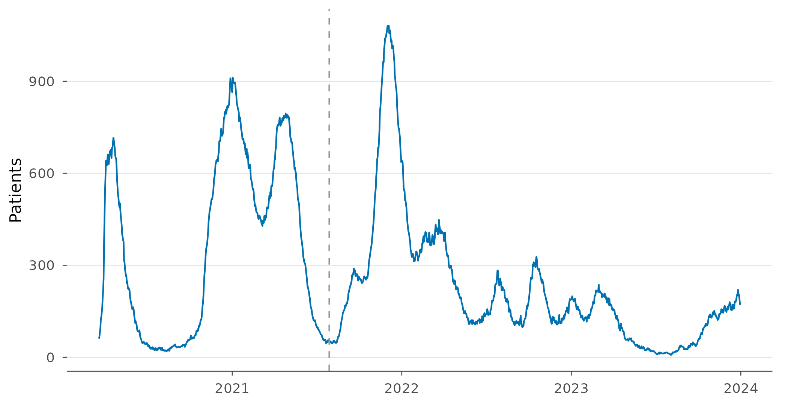
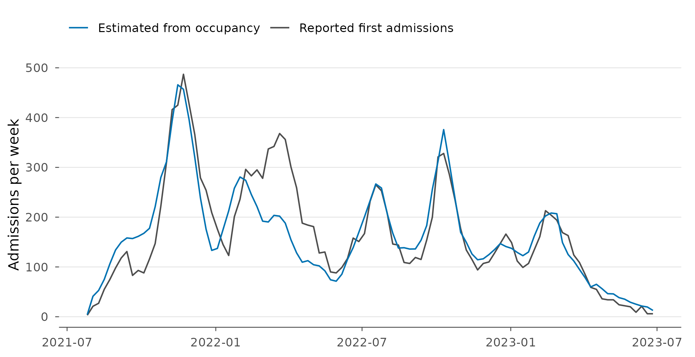
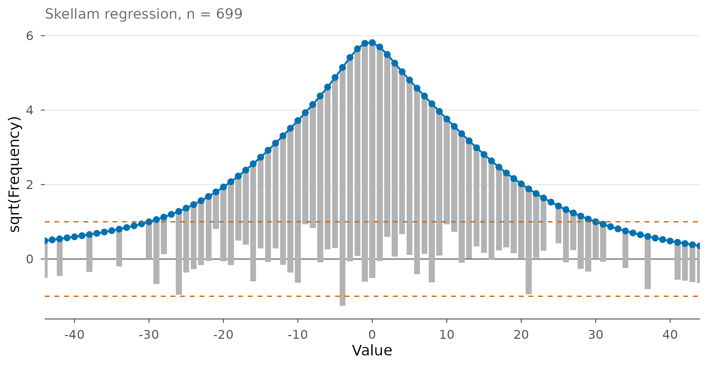
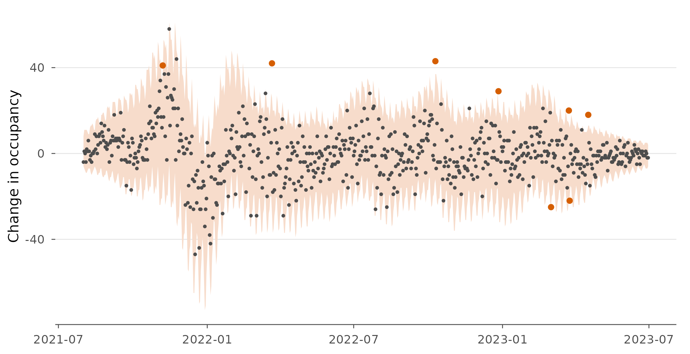

Disease surveillance: who enters and who leaves intensive care?
Montasser Ghachem and Oguz Ersan
Source:vignettes/articles/surveillance.Rmd
surveillance.RmdDuring the COVID-19 pandemic, German intensive care units reported every day how many COVID-19 patients they were treating. For most of the pandemic they did not report how many patients had arrived that day and how many had left, yet planners needed both: arrivals tell you how fast the epidemic is reaching hospitals, departures how long beds stay occupied. This article estimates the two flows from the occupancy alone, following Rave and Kauermann (2025), and then does what they could not: checks the estimates against admissions that the register began to publish later.
Why a Skellam distribution
If \(O_t\) is the number of patients in intensive care on day \(t\), then
\[ O_t - O_{t-1} = A_t - D_t , \]
where \(A_t\) counts the patients admitted and \(D_t\) the patients who left (discharged to a normal ward, moved elsewhere, or died). If \(A_t\) and \(D_t\) are independent Poisson counts with rates \(\lambda_{1t}\) and \(\lambda_{2t}\), the daily change has a Skellam distribution with mean \(\lambda_{1t} - \lambda_{2t}\) and variance \(\lambda_{1t} + \lambda_{2t}\). The mean alone tells you only the net flow; the variance tells you how large the two flows are. A ward where ten patients arrive and ten leave each day has the same mean change as one where one arrives and one leaves, but its changes swing much more.
The data
icu_bavaria contains the daily COVID-19 occupancy of
adult intensive care in Bavaria from the DIVI intensive care register,
the infections reported in the previous seven days, and, from 29 July
2021, the first admissions, all published by the Robert Koch Institute
under a CC BY 4.0 licence.
d <- icu_bavaria
d$change <- c(NA, diff(d$occupancy))
d$occ_lag <- c(NA, head(d$occupancy, -1))
d$weekday <- factor(format(d$date, "%u"), levels = 1:7, # %u: 1 = Monday
labels = c("Mon", "Tue", "Wed", "Thu", "Fri", "Sat", "Sun"))
head(d[!is.na(d$admissions), ], 3)
#> date occupancy admissions cases7 change occ_lag weekday
#> 497 2021-07-29 53 2 1918 1 52 Thu
#> 498 2021-07-30 51 2 1918 -2 53 Fri
#> 499 2021-07-31 52 2 1940 1 51 Sat
ggplot(d, aes(date, occupancy)) +
geom_line(colour = skellam_palette()[["fitted"]]) +
geom_vline(xintercept = as.Date("2021-07-29"), linetype = "dashed",
colour = skellam_palette()[["neutral"]]) +
labs(x = NULL, y = "Patients") +
theme_skellam()
COVID-19 patients in adult intensive care in Bavaria. The register reports first admissions from the dashed line on.
A Skellam distribution with positive rates needs a variance at least as large as the absolute mean. Month by month, the daily changes pass that test with a wide margin, so both flows are clearly present:
s <- subset(d, date >= as.Date("2021-08-01") & date <= as.Date("2023-06-30"))
m <- aggregate(change ~ format(date, "%Y-%m"), s,
function(z) c(mean = mean(z), variance = var(z)))
m <- data.frame(month = m[[1]], m[[2]])
head(m, 6)
#> month mean variance
#> 1 2021-08 3.419355 23.11828
#> 2 2021-09 3.300000 61.66552
#> 3 2021-10 5.258065 63.66452
#> 4 2021-11 21.400000 203.21379
#> 5 2021-12 -13.741935 229.39785
#> 6 2022-01 -9.806452 171.76129
all(m$variance > abs(m$mean))
#> [1] TRUEWe work with August 2021 to June 2023, the period in which the reported admissions let us check the results.
A model for the two flows
Following Rave and Kauermann (2025), admissions depend on the
infections reported in the previous week and on the day of the week, and
departures on the day of the week. Both have a smooth trend in time, for
the changes in testing, variants and treatment that no covariate
captures. One assumption is ours: each patient in intensive care leaves
with a daily probability that changes only slowly, so the expected
number of departures is proportional to yesterday’s occupancy. That
enters the model as an offset, offset(log(occ_lag)). (Rave
and Kauermann used an offset built from past admissions and the
distribution of the length of stay instead.)
In skellam.reg() the part of the formula before
| models \(\lambda_1\),
the rate of the counts that are added (admissions), and the part after
it \(\lambda_2\), the rate of the
counts that are subtracted (departures).
s$t <- as.numeric(s$date - min(s$date))
flows <- skellam.reg(change ~ log(cases7) + ns(t, 6) + weekday |
offset(log(occ_lag)) + ns(t, 6) + weekday, data = s)
round(coef(flows, "lambda1")[c("(Intercept)", "log(cases7)")], 3)
#> (Intercept) log(cases7)
#> -2.879 0.610A 10% rise in reported infections goes with about 6% more admissions. The weekday effects matter for both flows (likelihood-ratio test against the same model without them):
no_weekday <- skellam.reg(change ~ log(cases7) + ns(t, 6) |
offset(log(occ_lag)) + ns(t, 6), data = s)
anova(no_weekday, flows)
#> Likelihood ratio test
#>
#> Model 1: change ~ log(cases7) + ns(t, 6) | offset(log(occ_lag)) + ns(t, 6)
#> Model 2: change ~ log(cases7) + ns(t, 6) + weekday | offset(log(occ_lag)) + ns(t, 6) + weekday
#>
#> #Df LogLik Df Chisq Pr(>Chisq)
#> Model 1 15 -2623.7
#> Model 2 27 -2552.0 12 143.51 < 2.2e-16 ***
#> ---
#> Signif. codes: 0 '***' 0.001 '**' 0.01 '*' 0.05 '.' 0.1 ' ' 1The fitted departure rate per patient is the daily probability of leaving intensive care, and its inverse is the mean length of stay:
Checking the estimates against reported admissions
Rave and Kauermann noted that they could not validate their estimates, because admissions were not published. Since 29 July 2021 the register has reported first admissions, so we can compare. The model never saw them.
week <- as.Date(cut(s$date, "week"))
w <- data.frame(week = sort(unique(week)),
estimated = as.vector(tapply(rates[, "lambda1"], week, sum)),
reported = as.vector(tapply(s$admissions, week, sum)))
c(correlation = cor(w$estimated, w$reported),
ratio = sum(w$estimated) / sum(w$reported))
#> correlation ratio
#> 0.8794133 0.9748018
ggplot(w, aes(week)) +
geom_line(aes(y = reported, colour = "Reported first admissions")) +
geom_line(aes(y = estimated, colour = "Estimated from occupancy")) +
scale_colour_manual(values = c("Reported first admissions" = skellam_palette()[["observed"]],
"Estimated from occupancy" = skellam_palette()[["fitted"]])) +
labs(x = NULL, y = "Admissions per week", colour = NULL) +
theme_skellam() + theme(legend.position = "top")
Weekly admissions estimated from the occupancy alone (blue) and first admissions reported by the hospitals (grey).
For a model that sees only the net daily change, the agreement is good: the estimates follow the reported admissions through most waves and match their total within a few percent. The clear miss is February to April 2022, early in the Omicron wave, when the estimates fall short by up to half. The smooth trend, with six degrees of freedom over two years, may be too stiff to follow how quickly the share of infections ending in intensive care changed then.
How good is the fit?
The randomized quantile residuals of a correct model are standard normal. Here their standard deviation is clearly above one:
q <- residuals(flows, type = "quantile")
c(mean = mean(q), sd = sd(q))
#> mean sd
#> -0.02725042 1.34449926The daily changes vary more than admissions and departures alone can explain. The rest comes from movements the model does not describe: patients moved between hospitals (who leave one unit and enter another, without being first admissions), reports corrected the next day, units that miss a day.
This shows what can and cannot be learned from a difference. The data identify the sum \(\lambda_1 + \lambda_2\) through the variance, so any extra variation is read as extra flow unless the model rules that out. If the departure rate is allowed to depend freely on occupancy, the fit improves and the residuals become standard normal, but the estimated admissions then run well above the reported ones:
free <- skellam.reg(change ~ log(cases7) + ns(t, 6) + weekday |
log(occ_lag) + ns(t, 6) + weekday, data = s)
compare <- function(m) {
r <- predict(m, type = "rates")
c(AIC = AIC(m), residual_sd = sd(residuals(m, type = "quantile")),
admissions_ratio = sum(r[, "lambda1"]) / sum(s$admissions))
}
round(rbind(proportional = compare(flows), free = compare(free)), 2)
#> AIC residual_sd admissions_ratio
#> proportional 5157.94 1.34 0.97
#> free 4941.23 1.02 1.61The two models answer different questions. The model with departures proportional to occupancy estimates the patient flows; the free model describes the distribution of the daily change, which is what a monitoring rule needs. Its hanging rootogram shows observed and expected frequencies in close agreement:
plot(free) + coord_cartesian(xlim = c(-40, 40))
Hanging rootogram of the free model: bars of observed counts hang from the expected counts; bars ending near zero mean a good fit.
A monitoring rule
Surveillance systems flag counts that are unusually high for the time of year and the current situation (Salmon, Schumacher and Höhle, 2016). The Skellam quantile function gives such a rule for the daily change: flag a day when the change falls outside the central 99% of its predicted distribution.
r <- predict(free, type = "rates")
s$lower <- qskellam(0.005, r[, "lambda1"], r[, "lambda2"])
s$upper <- qskellam(0.995, r[, "lambda1"], r[, "lambda2"])
s$flag <- s$change < s$lower | s$change > s$upper
c(flagged = sum(s$flag), expected = round(0.01 * nrow(s), 1))
#> flagged expected
#> 8 7
ggplot(s, aes(date)) +
geom_ribbon(aes(ymin = lower, ymax = upper), fill = skellam_palette()[["band"]]) +
geom_point(aes(y = change), size = 0.6, colour = skellam_palette()[["observed"]]) +
geom_point(data = s[s$flag, ], aes(y = change), colour = skellam_palette()[["reference"]]) +
labs(x = NULL, y = "Change in occupancy") +
theme_skellam()
Daily change in occupancy with the central 99% interval of the free model; flagged days in orange.
The number of flagged days is close to the 1% expected by chance, so the rule is calibrated. In practice the model would be fitted to past data only and the interval computed one day ahead; here, for brevity, it is fitted to the whole period.
What this analysis leaves out
Rave and Kauermann work with all German districts, with age-specific
infection rates and spatial effects, and estimate the model with a
stochastic EM algorithm. This article uses one state and maximum
likelihood with skellam.reg(), which is enough to show the
idea and to check it against the admissions reported later. Like theirs,
the model treats admissions and departures as independent, which they
justify by the absence of triage in German intensive care.
References
- Rave, M. and Kauermann, G. (2025). The Skellam distribution revisited: Estimating the unobserved incoming and outgoing ICU COVID-19 patients on a regional level in Germany. Statistical Modelling 25(3), 270–288. doi:10.1177/1471082X241235024
- Salmon, M., Schumacher, D. and Höhle, M. (2016). Monitoring count time series in R: Aberration detection in public health surveillance. Journal of Statistical Software 70(10), 1–35. doi:10.18637/jss.v070.i10
- Robert Koch-Institut (2026). Intensivkapazitäten und COVID-19-Intensivbettenbelegung in Deutschland. Zenodo. doi:10.5281/zenodo.24053879. CC BY 4.0.
- Robert Koch-Institut (2026). COVID-19 7-Tage-Inzidenz in Deutschland. Zenodo. doi:10.5281/zenodo.24074082. CC BY 4.0.